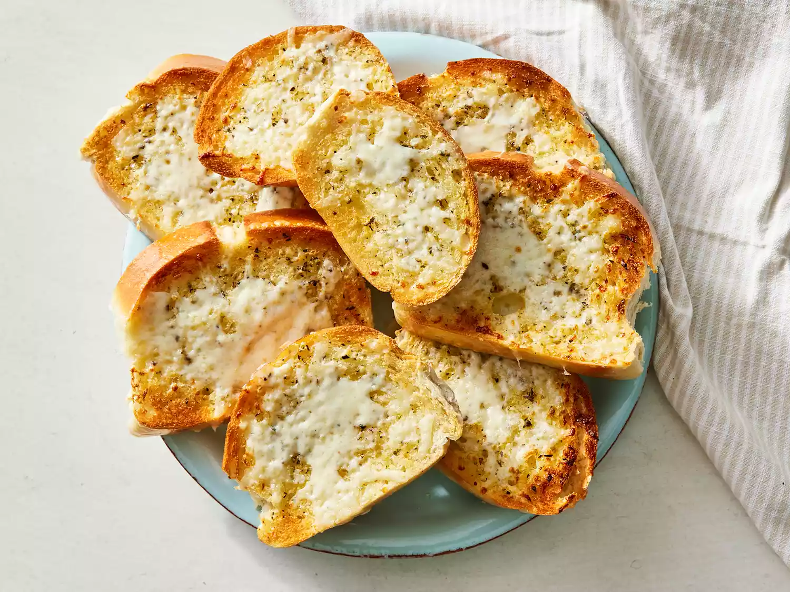

Garlic Bread

A simple yet delicious side dish that complements any Italian meal. This recipe adds some Mozzarella cheese for a more delicious bread.
The ingredients
- 1 loaf Italian bread
- 5 tablespoons butter, softened
- 3 cloves garlic, crushed
- 2 teaspoons extra virgin olive oil
- 1 teaspoon dried oregano
- salt and pepper to taste
- 1 cup shredded mozzarella cheese
Cooking procedure
- Set an oven rack about 6 inches from the heat source and preheat the oven's broiler. Cut loaf into ten 1-inch slices.
- Mix butter, garlic, oil, oregano, salt, and pepper together in a bowl; spread butter mixture on one side of each slice of bread; arrange bread slices, butter-side up, in a single layer on a baking sheet.
- Cook under the preheated broiler until slightly brown, checking frequently so they do not burn, about 3 minutes.
- Top bread slices with cheese and return to broiler until cheese is slightly brown and melted, about 2 minutes.
- Serve hot.